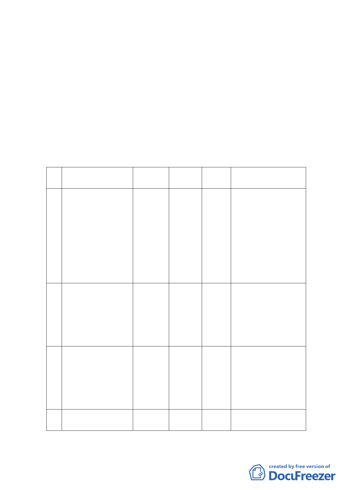

三、土地權屬：
計畫範圍土地隸屬臺北市中山區北安段四小段，皆為公有土地（分屬
臺北市、中華民國），其範圍主要分為『經國七海文化園區』（七海
寓所本體及庭園範圍，包括205-6地號等20筆土地，面積約0.79公頃，
土地權屬為臺北市。七海潭及週邊腹地範圍，位於基地西南側計畫道
路及海軍司令部車輛集用場，包括234地號等22筆土地，面積約3.19
公頃。土地權屬為臺北市及中華民國。）及『國防部海軍司令部大直
營區入口T 字型道路等週邊地區』（包括 207地號等15筆土地，面積
約0.81公頃。土地權屬為臺北市及中華民國。）
四、變更主要計畫內容：
(一)土地使用分區：
編
位置
號
原計畫
面積
新計畫
(公頃)
變更理由
北 安 段 四 小 段 205-6 、
205-7 、 236 、 239 、
241-1、241-2、243-1、
244 、 244-1 、 245-2 、
1 245-4、246-2、248-1、 行政區
248-2、282-10、285、
208-2 、 225 、 226 、
228-1、229、230、232、
風景區
3.22
1. 為 保 存 本 市 文 化
資產古蹟、保持本
區良好自然資源
與景觀。
2. 提 升 民 間 整 體 開
發與效益。
231、286 地號，共25 筆
北 安 段 四 小 段 234 、
235、237、238、240、
289-1、207-3、205-13、
2 道路用地 風景區
206-3 、 233 、 242-1 、
231-1、231-2 地號，共
13 筆
0.56
1. 為 保 存 本 市 文 化
資產古蹟、保持本
區良好自然資源
與景觀。
2. 提 升 民 間 整 體 開
發與效益。
北 安 段 四 小 段 207 、
390 、 389 、 204-3 、
204-2、208-1、211-3、
3 道路用地
207-1、211-5、205-4、
206-1、201-1 地號，共
12 筆
總
計
行政區
0.43
配合未來七海文化園
區規劃與海軍司令大
直營區實質使用進行
調整（土地管用合
一）。
4.21
（二）土地使用分區管制：
- 13 -